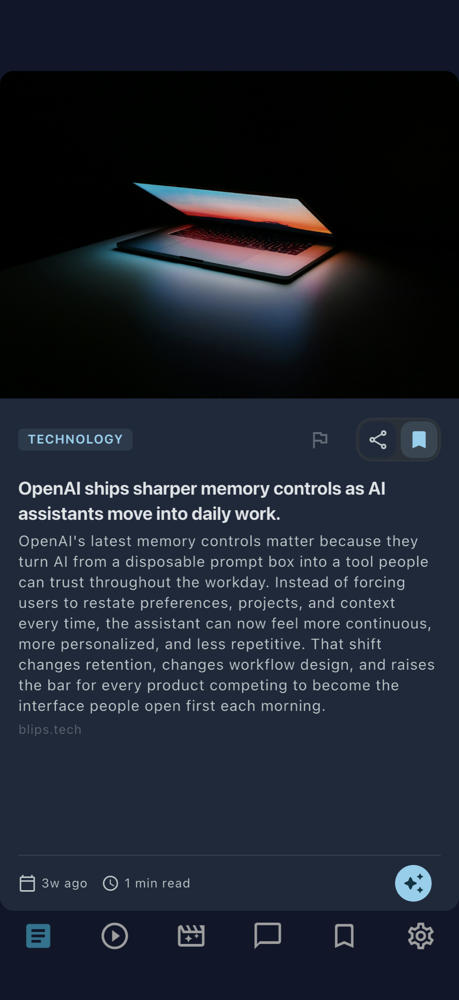
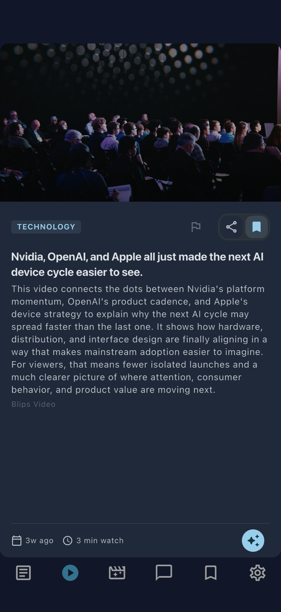
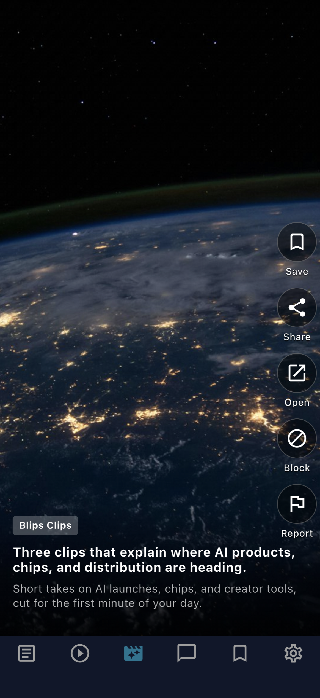

01 Feed
Read faster with summaries, freshness cues, and source context.
Start with the stream, dip into the source when you want depth, and keep the signal flowing instead of opening ten tabs.
Blips turns articles, videos, and reels into a conversational stream with summaries, context, and one-tap AI chat.



Open any story, ask follow-up questions, and keep moving without losing the thread.
Each surface has a job. Feed for fast scanning. Videos and reels for passive discovery. AI chat when the headline needs more context.
Start with the stream, dip into the source when you want depth, and keep the signal flowing instead of opening ten tabs.
Use quick prompts or ask your own follow-up questions without breaking the reading or watching flow.
Video stays part of the browsing loop, so switching from reading to watching feels natural instead of sending you somewhere else.
Reels give the product a faster surface for discovery while still pointing back to the larger stories worth following.
Blips is designed around how people actually follow stories now: scanning a feed, jumping into video, and asking for context the second something gets interesting.
Read the privacy policyStart with the fastest view of what matters right now.
Move into video and reels without breaking the browsing rhythm.
Open AI chat on the exact story you are trying to understand.
Pass stories along with branded cards and conversation context.
The product keeps its personality across reading, watching, and scrolling, so each mode feels like part of one system.
Fast scanning, source-aware cards, and summaries built for quick orientation.
Video stays close to the feed instead of feeling like a separate product.
Swipe through short-form news clips while still staying tied to bigger stories.
Blips keeps the public-facing basics accessible without login, which matters for users, reviewers, and anyone checking how the product works.
See what data Blips handles, why it is collected, and how deletion requests work.
Open page 02 TermsReview the rules, limitations, and third-party content notes for the product.
Open page 03 SupportEmail support, report bugs, and send privacy or accessibility requests from one place.
Open page